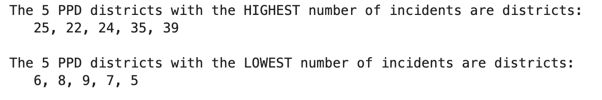
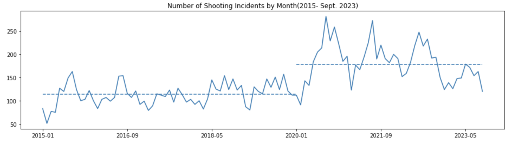

Project Overview:
In my data science project, I undertook a detailed analysis of the Philadelphia Shooting Incidents dataset. My goal was to uncover hidden trends and patterns that could provide deeper insights into public safety and crime in Philadelphia. This project was an integral part of my coursework in "COMM2550: Foundations in Data Science for Communication," where I applied Python and pandas to analyze real-world open data.
Methodology:
- Data Processing: Utilized Python's pandas library to load, cleanse, and structure the dataset for analysis.
- Exploratory Analysis: Conducted an extensive exploration of the data, focusing on trends over time, geographical distribution, and other pertinent factors influencing shooting incidents.
Key Findings and Insights:
- Temporal Trends:
- Identified a significant increase in shooting incidents post-2020, suggesting a potential correlation with the socioeconomic impacts of the COVID-19 pandemic.
- Observed seasonal patterns with higher incident rates during warmer months, indicating possible links to social dynamics and urban activity.
- Geographical Analysis: 
- Analyzed shootings by police district, revealing areas with heightened activity. This insight is crucial for resource allocation and preventive strategies in law enforcement.
- Comparative Yearly Analysis: 
- Conducted a comparative study of yearly data, highlighting the escalation in recent years (pre and post covid) and projecting future trends based on current patterns.
Contributions to Public Safety and Policy
- The project findings offer valuable insights for policymakers and law enforcement agencies in Philadelphia, aiding in data-driven decision-making.
- Highlighted the need for targeted interventions in high-incident areas and during specific times of the year.
Personal Reflection
This project was a profound learning experience, enhancing my capabilities in data analytics and providing a realistic perspective on the power of data science in societal applications. It underscored the importance of thorough data analysis in understanding complex social issues and informed my approach to future data-driven projects.